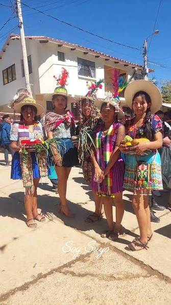
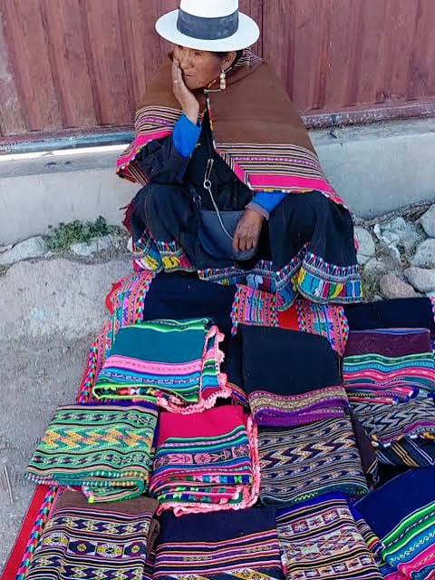
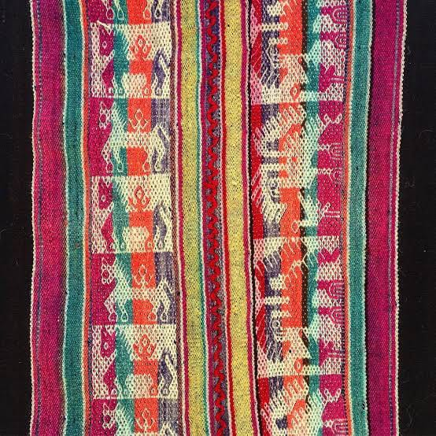
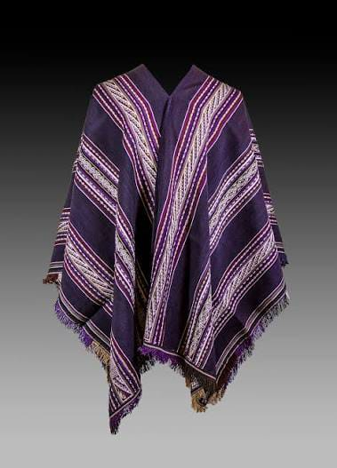

🏔️ Vestimentas Tradicionales de Potosí 🌺
Tejidos, colores y tradiciones que representan nuestra identidad cultural.
El departamento de Potosí posee una gran diversidad cultural, formada por comunidades quechuas y otras poblaciones con tradiciones propias. Sus vestimentas varían según la región, el municipio y la comunidad. Entre las prendas más representativas se encuentran las polleras, las mantas, los aguayos, los ponchos y los sombreros. Sus colores, tejidos y diseños reflejan la historia, el trabajo artesanal y la identidad de sus habitantes.

1. Pollera
Es una falda amplia que forma parte de la vestimenta de muchas mujeres de la región. Puede variar en sus colores, telas y adornos de acuerdo con la comunidad y la ocasión. Es una prenda que expresa costumbres e identidad cultural.

2. Manta o lliclla
Es una pieza textil que se lleva sobre los hombros o la espalda. En algunas comunidades también se utiliza para cargar objetos o productos. Sus tejidos y diseños muestran conocimientos artesanales transmitidos entre generaciones.

3. Aguayo
Es un tejido tradicional andino, generalmente rectangular y con diseños de colores. Se utiliza para transportar productos, cargar a los niños o complementar la vestimenta. Sus figuras y combinaciones de colores expresan la tradición de cada comunidad.

4. Poncho
Es una prenda de abrigo utilizada por hombres en distintas comunidades. Se elabora con tejidos de lana y ayuda a proteger del frío del altiplano y de las zonas altas. Sus colores y diseños cambian según el lugar.

5. Sombrero
Se utiliza para proteger la cabeza del sol, el viento y el frío. Existen diferentes formas y estilos en el departamento, por lo que el tipo de sombrero puede variar de una comunidad a otra.
6. Abarcas y calzado
En algunas comunidades se usan abarcas, un tipo de calzado sencillo y resistente, adecuado para caminar por caminos rurales. En otros lugares se utilizan zapatos, según las actividades y las costumbres de cada familia.
Guarda las seis fotografías en la misma carpeta que este archivo HTML.